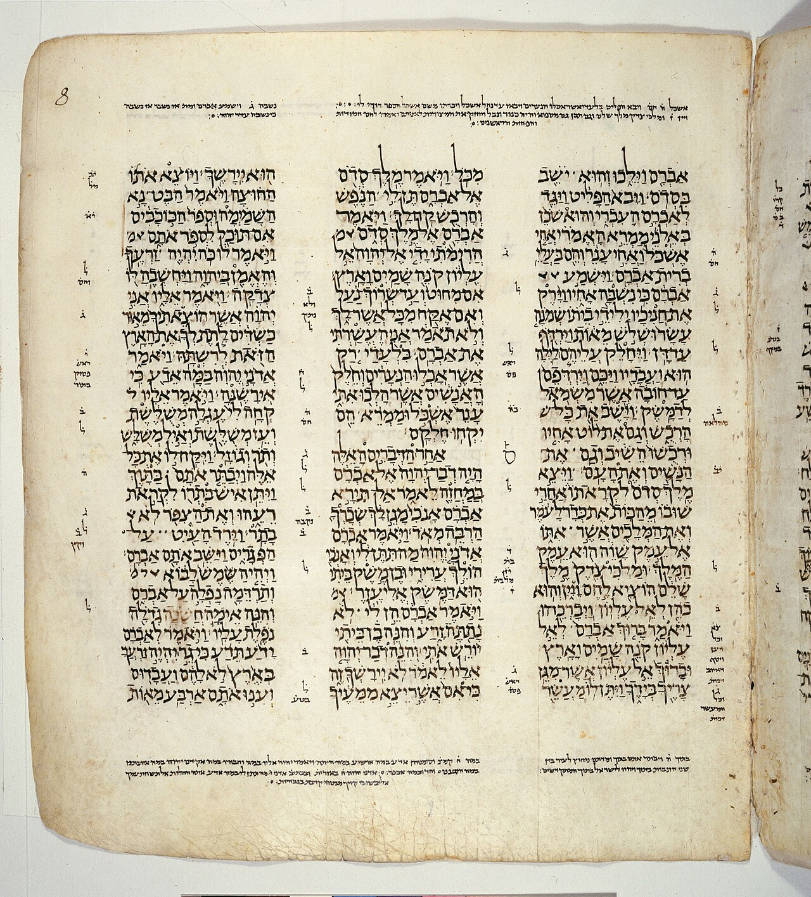
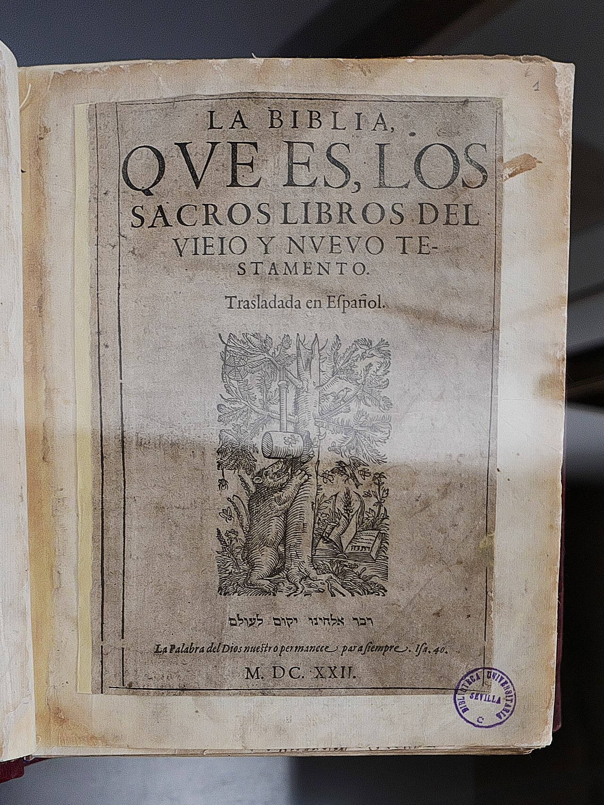
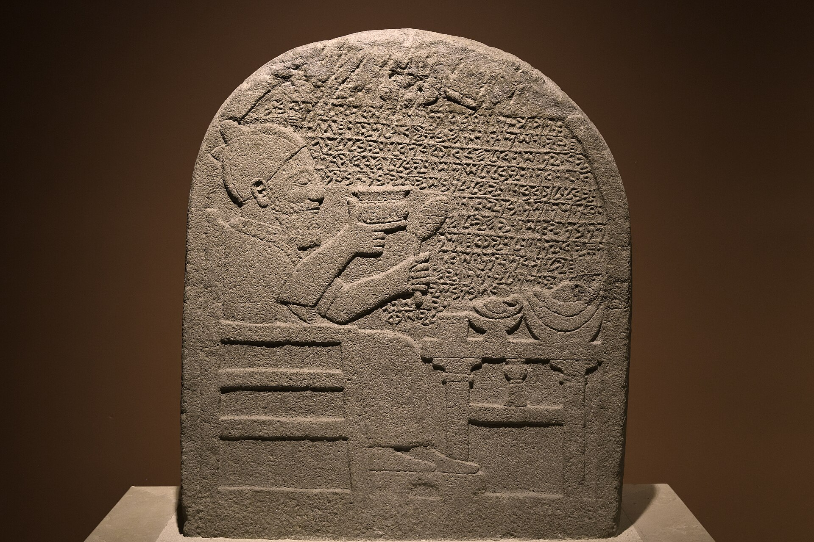

La palabra que traducimos por «alma» nombraba, en origen, el gaznate. Y la ley la usaba para hablar de cadáveres.
Hay un versículo que casi todo el mundo cree conocer. Dios forma al ser humano del polvo, le sopla en la nariz, y el ser humano —dice la versión que muchos aprendimos— recibe un alma. Génesis 2,7. Es el texto que se cita cuando se quiere decir que lo que nos distingue del resto de los animales es algo que se nos añadió desde fuera.
El hebreo no dice eso. Y no es una cuestión de matiz: es una cuestión de gramática.
Esta serie sigue una sola idea a lo largo de tres mil años —la idea de que dentro de cada persona hay algo inmaterial, separable e inmortal— para ver dónde nació de verdad y qué se le fue pegando por el camino. Empezamos donde hay que empezar: por las palabras. Porque antes de preguntar si el alma existe, conviene saber qué nombraban los textos que supuestamente hablan de ella. Y lo que nombraban era, casi siempre, una parte del cuerpo.
וַיִּיצֶר יְהוָה אֱלֹהִים אֶת־הָאָדָם עָפָר מִן־הָאֲדָמָה וַיִּפַּח בְּאַפָּיו נִשְׁמַת חַיִּים וַיְהִי הָאָדָם לְנֶפֶשׁ חַיָּה Génesis 2,7
Palabra por palabra: «y modeló YHWH Elohim al humano, polvo de la tierra, y sopló en sus narices nishmat ḥayyim —aliento de vidas—, y el humano llegó a ser nefesh ḥayyah».
La pieza decisiva es esa construcción final: wa-yehi… le-. El verbo «ser» seguido de la preposición le- y un sustantivo es, en hebreo bíblico, la fórmula normal de transformación o resultado: llegar a ser algo, convertirse en algo. Es la misma construcción de Génesis 2,24, donde los dos «serán le-basar eḥad», una sola carne; o la de Éxodo 4,3, donde la vara «se convirtió le-naḥash», en serpiente.
De ahí se siguen tres cosas, y ninguna es discutida entre especialistas. El sujeto del verbo es el humano entero, no una parte suya. Nefesh ḥayyah es lo que el humano pasa a ser, no algo que se le mete dentro. Y lo que Dios insufla no es nefesh: es neshamah, aliento. La ecuación del texto es polvo más aliento igual a nefesh viviente, no cuerpo más alma igual a persona.

Conviene decir aquí algo que desarma de entrada una acusación previsible. En español, la traducción que dice «alma viviente» en este versículo es la Reina-Valera de 1909, que calcó el latín de la Vulgata hasta en la preposición: «y fué el hombre en alma viviente». La Reina-Valera de 1960 ya no lo dice: dice «un ser viviente», igual que la Biblia de Jerusalén y la NVI. No estamos peleando con un espantapájaros. Estamos describiendo una cadena —Septuaginta, Vulgata, versiones castellanas— que las propias versiones modernas ya han empezado a deshacer.
Si nefesh ḥayyah significara «alma viviente» en el sentido que hoy le damos, el Génesis tendría un problema serio veinte versículos antes. Porque la expresión no aparece por primera vez en 2,7. Aparece en el primer capítulo, y no aplicada a seres humanos.
Génesis 1,20: las aguas bullen de nefesh ḥayyah. 1,21: Dios crea los grandes monstruos marinos y toda nefesh ḥayyah que se mueve. 1,24: que produzca la tierra nefesh ḥayyah según su especie. Y en 2,19, cuando el humano pone nombre a los animales, el texto dice que cada uno se llamaría como él lo llamara, «toda nefesh ḥayyah».
Peces. Aves. Reptiles. Ganado. La expresión que se traduce por «alma viviente» cuando el sujeto es Adán se traduce por «seres vivientes» cuando el sujeto tiene aletas. No hay dos palabras hebreas: hay una, y dos decisiones distintas del traductor según quién sea el sujeto.
Y ahora el dato que zanja la cuestión, que es también el que peor se cita. En la legislación sacerdotal, nefesh designa el cadáver como fuente de impureza ritual. No es un uso raro ni un desliz: es terminología técnica de la Torá.
«Por una nefesh no se contamine entre su pueblo.» La Reina-Valera: «que no se contaminen por un muerto».
«A una nefesh muerta no se acercará.» La Reina-Valera: «no se acercará a persona muerta».
«El que toque un muerto, cualquier nefesh humana…» La Reina-Valera: «El que tocare cadáver de cualquier persona».
Aquí ni siquiera hace falta la palabra «muerto»: basta teme-nefesh, «impuro-de-nefesh», para decir «contaminado por un cadáver».
La lectura filológica correcta es cuidadosa. Estos textos no hablan de «almas muertas» en sentido metafísico. Nefesh funciona aquí en su acepción de «persona, individuo», y por metonimia designa al difunto, es decir, su cuerpo: lo que hay que enterrar y de lo que hay que apartarse. Nefesh met es, literalmente, «una persona muerta».
Pero eso basta para lo que aquí importa. El término que la ley usa para nombrar un cadáver no puede ser al mismo tiempo el nombre de un principio inmortal. Una palabra que se aplica a lo que se pudre no designa lo que sobrevive.
¿Y qué nombraba entonces? Una parte del cuerpo. Nefesh es, en origen, la garganta: el gaznate, el cuello. Su pariente acadio napištu significa lo mismo. De ahí salen, por metonimia, todos los demás sentidos —aliento, apetito, deseo, vida, persona, «sí mismo»—, y hay textos donde el sentido físico es imposible de esquivar.
Isaías 5,14: el Sheol «ensanchó su nefesh y abrió su boca sin medida». Un inframundo con gaznate. Jonás 2,6: las aguas «me rodearon hasta la nefesh» —en castellano «hasta el alma» no significa nada; en hebreo el agua le llega al cuello—. Salmo 105,18, de José en la cárcel: «en hierro entró su nefesh», el hierro del collar.
Y lo mismo vale para todo el vocabulario. El hebreo no tenía un aparato psicológico abstracto: tenía una anatomía. El lev, el corazón, era el órgano de pensar y de decidir —Salomón no pide un corazón sensible, pide un lev shomeaʿ, un corazón que escuche, es decir, discernimiento judicial—. Los kilyot, los riñones, eran el yo más recóndito y el objeto del examen divino. Los meʿim, las entrañas, eran la conmoción. El ruaḥ era a la vez el viento del desierto y el ánimo de una persona: la misma palabra.
Dónde situaba el hebreo cada palabra que hoy traducimos por «alma», «espíritu» o «corazón». Elige un término, o cambia el rótulo y mira lo que ocurre.
Nueve términos, nueve lugares del cuerpo.
Pulsa uno en la figura, o usa el conmutador de arriba para ver en qué se convierten al pasar al castellano.
La figura está vista de frente, como en cualquier lámina anatómica: el costado derecho del cuerpo —donde están el hígado y el pulmón de tres lóbulos— queda a la izquierda de la imagen. Los órganos se dibujan en proyección de superficie, es decir, donde se palpan o se auscultan desde fuera.
Hay un versículo que muestra el desplazamiento entero funcionando de una vez. Salmo 73,21, en hebreo, dice: «porque se agriaba mi levav y mis kilyot eran punzados». Corazón y riñones.
La Reina-Valera pone: «Se llenó de amargura mi alma, y en mi corazón sentía punzadas».
El corazón se ha convertido en alma. Los riñones se han convertido en corazón. El mapa anatómico completo, desplazado un lugar, dentro de un mismo versículo. Y no es un descuido: es lo que pasa cuando una lengua sin órganos psicológicos tiene que verter otra que los tiene. La Reina-Valera nunca dice «riñones» en contexto psicológico; los reparte entre «conciencia», «corazón», «corazones» y «entrañas». El órgano existe en el hebreo y no existe en la Biblia castellana.

Hay que decir también lo contrario, porque si no estaríamos haciendo trampa. La traducción no borra por sistema: borra donde el término le resulta incómodo. Los meʿim siguen siendo «entrañas» en Jeremías 4,19 y en Lamentaciones 1,20. Y en Lamentaciones 2,11 la Reina-Valera dice, literalmente, «mi hígado se derramó por tierra», conservando una anatomía que muchas versiones inglesas modernas borran. En Proverbios 7,23, en cambio, la saeta ya no traspasa el hígado sino «su corazón». Misma versión, dos decisiones opuestas.
Todo lo anterior es la posición mayoritaria de la investigación y lleva siéndolo desde mediados del siglo XX: la antropología hebrea es unitaria, no dualista; no hay en ella un cuerpo que contiene un alma. Hans Walter Wolff le dio su formulación clásica; su capítulo sobre el corazón se titula, significativamente, «el hombre razonable».
Pero un artículo que se detuviera aquí estaría contando media historia, y la mitad que falta es la interesante.
Primero, porque el propio léxico se resiste. En Génesis 35,18, cuando Raquel muere de parto, el texto dice que su nefesh salía. Y en 1 Reyes 17,21 Elías pide que la nefesh del niño de Sarepta vuelva a su interior. Es decir: el mismo vocabulario que llama nefesh a un cadáver describe la nefesh como algo que sale y puede volver. Cualquier síntesis que omita una de las dos mitades está haciendo apologética, en una dirección o en la otra.
Segundo, porque hay especialistas que discuten el consenso con argumentos serios. Richard C. Steiner sostiene en Disembodied Souls (2015) que en ciertos contextos sí hay una nefesh separable, y que negarlo es tan anacrónico como afirmar lo contrario.
Y tercero, por una piedra.

En 2008, en Zincirli —la antigua Samʾal, en la actual Turquía—, apareció una estela funeraria del siglo VIII a.C. con una inscripción en arameo. La encargó en vida un funcionario llamado Katumuwa, y dice que dispuso banquetes para su npš —el mismo término, en arameo— que está en esta estela.
Un npš que reside en una piedra, que sobrevive a su dueño y al que se alimenta. Eso no es una antropología unitaria. La estela es aramea, no israelita, y de un contexto cultural vecino pero distinto; no prueba que Israel pensara lo mismo. Pero está en la misma lengua semítica noroccidental, en el mismo siglo y a pocos cientos de kilómetros, y obliga a formular el consenso con más cuidado del que suele formularse.
Conviene terminar diciendo con precisión qué se ha mostrado y qué no.
Se ha mostrado que la palabra castellana «alma» hace un trabajo que nefesh no hacía: nombrar una sustancia inmaterial, individual, separable y superviviente por naturaleza. Nefesh es una garganta, un apetito, una vida, una persona, y a veces un cadáver. Cuando la Septuaginta la vertió por ψυχή y la Vulgata por anima, esas palabras griega y latina ya arrastraban una carga filosófica que el hebreo no tenía. La traducción no mintió: hizo lo que hace toda traducción, elegir. Pero la elección tuvo consecuencias de tres mil años.
No se ha mostrado —y esto importa— que los antiguos israelitas no creyeran en ninguna forma de supervivencia. Eso es una afirmación distinta, y la entrega siguiente se ocupa de ella: resulta que sí tenían un más allá, y que era doble.
Y desde luego no se ha mostrado nada sobre si el alma existe. Una palabra tiene historia; las cosas, si las hay, no dependen de ella. A esa distinción, que tiene nombre propio, volveremos en la última entrega.
Los datos léxicos de esta entrega son consenso: la construcción hayah le- como fórmula de transformación, el uso de nefesh ḥayyah para los animales en Génesis 1, y el uso sacerdotal de nefesh para el cadáver no los discute ningún especialista. Las referencias están verificadas una a una contra el texto masorético.
Lo que está en debate abierto es cuánto peso soporta esa base. La tesis de la antropología unitaria —Hans Walter Wolff, Robert Di Vito— es la mayoritaria. Frente a ella, Richard C. Steiner defiende en Disembodied Souls (SBL, 2015) que hay contextos con una nefesh separable; y la estela de Katumuwa ha reabierto la discusión sobre qué entendían por npš las culturas semíticas vecinas. Los pasajes de Génesis 35,18 y 1 Reyes 17,21 son el problema interno del consenso, y se citan aquí precisamente por eso.
Una advertencia sobre las cifras. Los recuentos de apariciones no coinciden entre concordancias: para lev y levav van de 845 a 861 según quién cuente y sobre qué edición. Damos los números con su procedencia y no promediamos, porque la discrepancia es en sí misma un dato sobre lo difícil que es delimitar estas palabras.
Y lo que este artículo no hace: decidir si el alma existe. Describe la historia de una palabra y de sus traducciones. Que una idea tenga origen documentable no dice nada sobre su verdad, y confundir las dos cosas tiene nombre propio. Volveremos a ello en la última entrega de la serie.
Texto hebreo cotejado contra el Códice de Leningrado (Westminster Leningrad Codex) y Miqra according to the Masorah. Traducciones castellanas citadas por Reina-Valera 1960 y Reina-Valera 1909.
Hans Walter Wolff, Antropología del Antiguo Testamento, caps. II y V · Richard C. Steiner, Disembodied Souls: The Nefesh in Israel and Kindred Spirits in the Ancient Near East, SBL Press, 2015 · Richard Pleijel, «Translating the Biblical Hebrew Word Nephesh in Light of New Research», The Bible Translator 70/2 (2019) 154-166 · Matthew Suriano, A History of Death in the Hebrew Bible, Oxford University Press, 2018.
Sobre la estela: Dennis Pardee, «A New Aramaic Inscription from Zincirli», BASOR 356 (2009) 51-71.